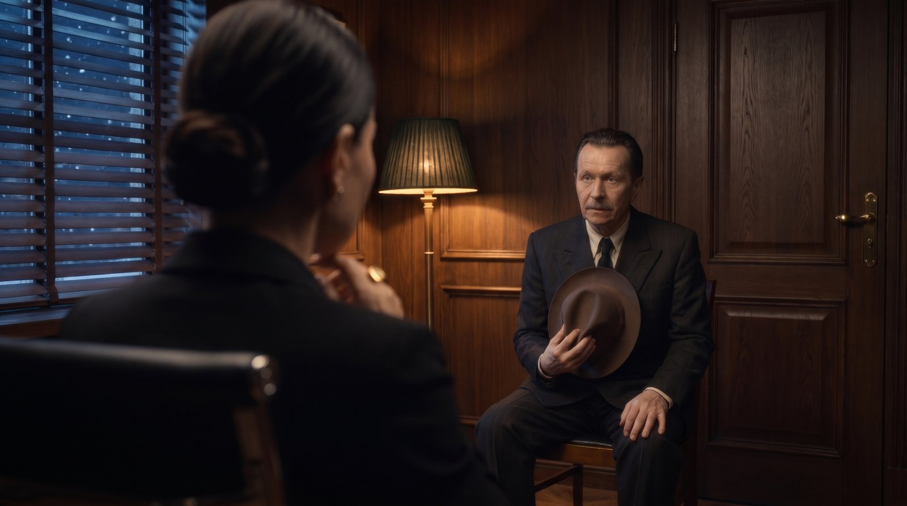
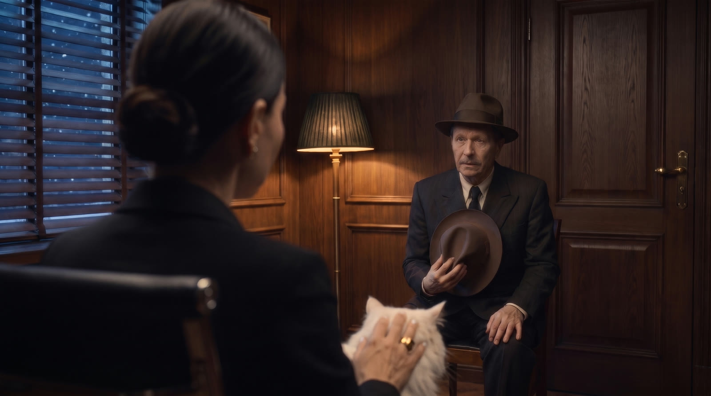
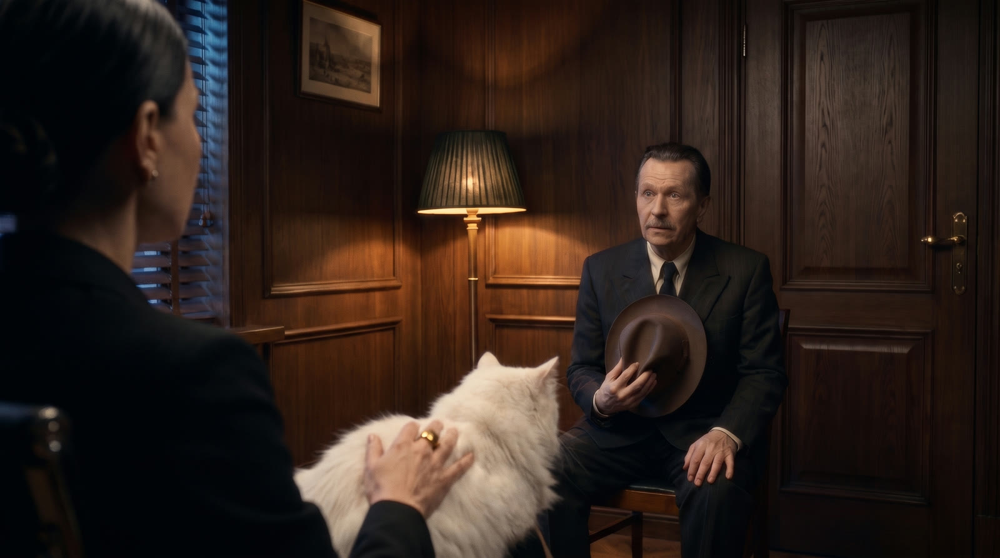
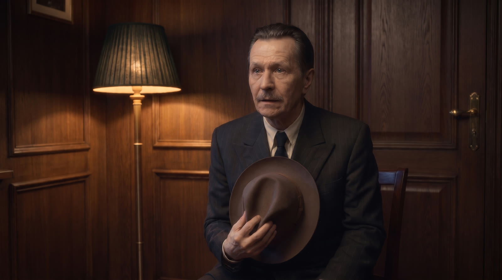
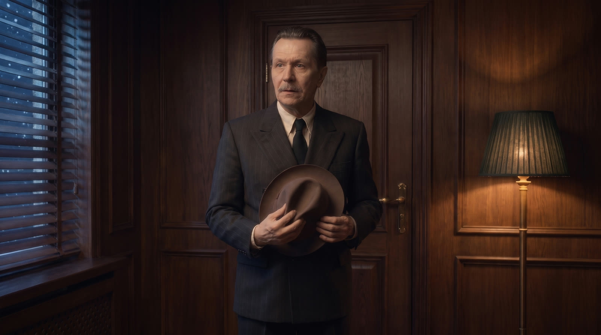
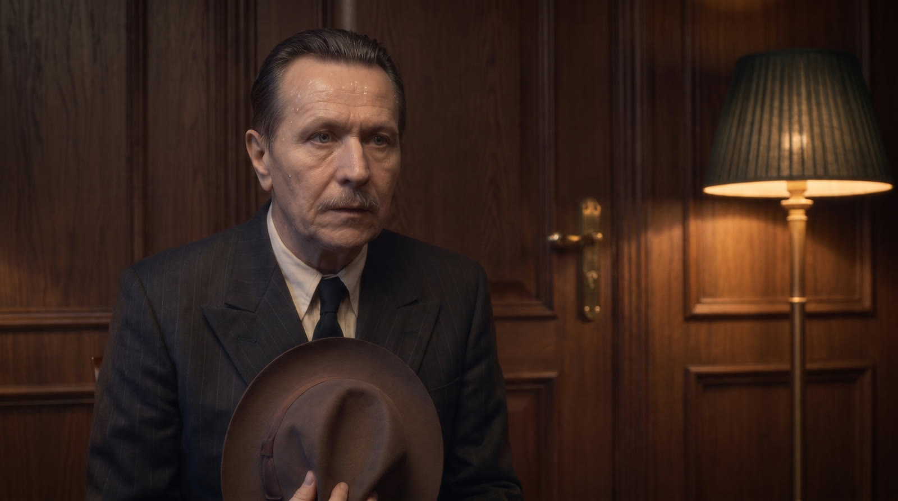

Менеджер: план клипа
Что говорит
Godmother, I need a Santa Claus. It's a matter of life and death. I beg you, help me.
Перевод поверх: «Крёстная, мне очень нужен Дед Мороз. Это вопрос жизни и смерти. Я прошу тебя, помоги.»
Как оживляю
Один клип Veo на 8 с, $0,3. Первый кадр: вариант, который ты выберешь. Он говорит фразу целиком, мнёт шляпу, смотрит на неё. Камера почти стоит, лёгкий наезд. Если в кадре её силуэт, он не двигается, руки остаются на коте. Клип не режу, пока он не договорит.
Было (не нравится)
Её силуэт с рукой у подбородка: в конце клипа с котом она сидела иначе.

Вариант 1
Её силуэт со спины в той же позе, что в конце клипа с котом: сидит прямо, руки на коте. Он проситель со шляпой.

Вариант 2
От неё только край плеча и пучок в тени. Он крупнее, проситель со шляпой.

Вариант 3
Он один в кадре, сидит на краю стула, подался вперёд, шляпа у груди, умоляющий взгляд.

Вариант 4
Он один, стоит у двери, шляпа в руках.

Вариант 5
Он один, крупно лицо, пот на лбу, отчаяние.
